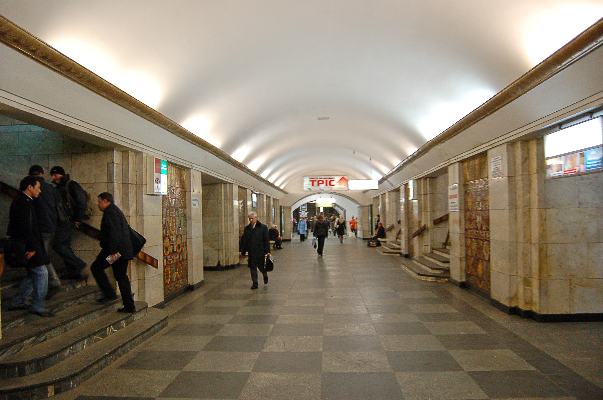

About
ENG 🇬🇧 -> JPN 🇯🇵 -> UKR 🇺🇦
[ENG]
Khreschatyk is a station of the Kyiv subway system. It is located on the Sviatoshynsko-Brovarska line between Teatralna and Arsenalna stations. It was opened on November 6, 1960 as part of the first stage of construction. It is named after the central street of Kyiv.
It is part of the transfer hub between the Sviatoshynsko-Brovarska and Obolonsko-Teremkivska lines.
The station tracks on the eastern side of the station are accessed by a service branch line from the Obolonsko-Teremkivska and Syretsko-Pecherska lines.
Since 1986, the station has had the status of an “architectural monument of local importance”, with a security number 169.
From February 26 to December 20, 2022, the station was closed to passengers due to the war, with trains passing through non-stop.
The structure of the station is a pylon three-vaulted with an island platform.
Track development: A 3-bar reversible dead end from Arsenalna station, which goes into the SSG with Syretsko-Pecherska and Obolonsko-Teremkivska lines.
It has three underground halls - a middle one and two halls with boarding platforms. The halls of the station are interconnected by a series of passages-portals that alternate with pylons. The middle hall has two exits. The western exit, opened in 1960 at the same time as the station, is connected by an escalator tunnel with a three-belt single-march escalator to the ground lobby on Khreschatyk Street. Built in 1965, the eastern escalator incline, equipped with a three-belt single-march escalator, connects to the intermediate lobby, which branches into 2 exits: to the lobby on Architect Horodetskyi Street and to the escalator tunnel with a three-belt single-march escalator to the ground lobby on Instytutska Street.
Given that Khreschatyk is the central station of the city, the authors turned to the sources of Ukrainian art. Marble pylons with bright majolica inserts convey the national flavor. The cornices on top of the pylons depicting sunflowers and corn look a bit ridiculous in the style of the time, but nowadays they look a bit funny. In the 1980s, the tiled cladding of the station's track walls was replaced with marble.
[JPN]
フレシチャーティクは、キーウ地下鉄の駅である。スヴィアトシンスコ・ブロヴァルスカ線のテアトラルナ駅とアルセナルナ駅の間にある。1960年11月6日、第一期工事の一部として開業した。駅名はキーウの中央通りにちなむ。
スヴャトシンスコ・ブロヴァルスカ線とオボロンスコ・テレムキフスカ線のインターチェンジの一部である。
駅の東側には、オボロンスコ・テレムキフスカ線とシレツコ・ペチェルスカ線からの支線が乗り入れている。
1986年以来、この駅は地元の重要な建築記念物に指定されており、169番がつけられている。
2022年2月26日から12月20日まで、戦争により駅が閉鎖され、列車はノンストップで通過した。
駅の構造は、島式ホームを持つ3アーチの鉄塔である。
軌道の整備： アルセナルナ駅から3バールの可逆デッドエンドで、シレツコ・ペチェルスカ線とオボロンスコ・テレムキフスカ線とのSSGに入る。
駅には3つの地下ホールがあり、真ん中のホールと2つのホールに乗り場がある。各ホールは、パイロンと交互に配置されたポータルによって連結されている。中ホールには2つの出口がある。1960年に駅と同時に開業した西側の出口は、3ベルトのシングル・マーチ・エスカレーターを備えたエスカレーター・トンネルでフレシチャチク通りの地上ロビーにつながっている。1965年に建設された、3ベルト・シングルマーチ・エスカレーターを備えた東側のエスカレーター・インクラインは、中間ロビーにつながっており、建築家ホロデツキー通りのロビーと、インスティトゥツカ通りの地上ロビーへの3ベルト・シングルマーチ・エスカレーターを備えたエスカレーター・トンネルに分岐している。
クレシャティクはウクライナの中心駅であることから、著者はウクライナ美術の源泉に目を向けた。大理石のパイロンには鮮やかなマジョリカがはめ込まれ、ウクライナらしさを表現している。鉄塔上部のひまわりやトウモロコシを描いたコーニスは、当時のスタイルでは少し滑稽に見えるが、現在では少し滑稽に見える。1980年代、駅の線路壁のタイル張りは大理石に取り替えられた。
[UKR]
«Хреща́тик» — станція Київського метрополітену. Розташована на Святошинсько-Броварській лінії між станціями «Театральна» і «Арсенальна». Відкрита 6 листопада 1960 року у складі першої черги будівництва. Назва — від центральної вулиці Києва.
Є частиною пересадкового вузла між Святошинсько-Броварською і Оболонсько-Теремківською лініями.
До станційних колій зі східного боку станції підходить службова сполучна гілка від Оболонсько-Теремківської та Сирецько-Печерської ліній.
З 1986 року станція має статус «пам'ятка архітектури місцевого значення», охоронний номер 169.
З 26 лютого по 20 грудня 2022 року внаслідок війни була закрита для пасажирів, поїзди минали без зупинки.
Конструкція станції — пілонна трисклепінна з острівною платформою.
Колійний розвиток: 3-стрілочний оборотний тупик з боку станції «Арсенальна», що переходить у ССГ з Сирецько-Печерською та Оболонсько-Теремківською лініями.
Має три підземних зали — середній і два зали з посадочними платформами. Зали станції сполучені між собою чередою проходів-порталів, які чергуються з пілонами. Середній зал має два виходи. Західний вихід, відкритий 1960 року одночасно зі станцією, сполучений ескалаторним тунелем з тристрічковим одномаршевим ескалатором з наземним вестибюлем на вулиці Хрещатик. Побудований 1965 року східний ескалаторний нахил, обладнаний тристрічковим одномаршевим ескалатором, сполучається з проміжним вестибюлем, який розгалужується на 2 виходи: до вестибюля на вулиці Архітектора Городецького і до ескалаторного тунелю з тристрічковим одномаршевим ескалатором до наземного вестибюля на Інститутській вулиці.
Із огляду на те, що «Хрещатик» — центральна станція міста, автори звернулися до джерел українського мистецтва. Мармурові пілони з яскравими вставками з майоліки передають національний колорит. У стилі того часу, а нині трохи смішними, виглядають карнизи поверх пілонів з зображенням соняшника та кукурудзи. В 1980-ті роки кахельне облицювання колійних стін станції було замінено мармуровим.
